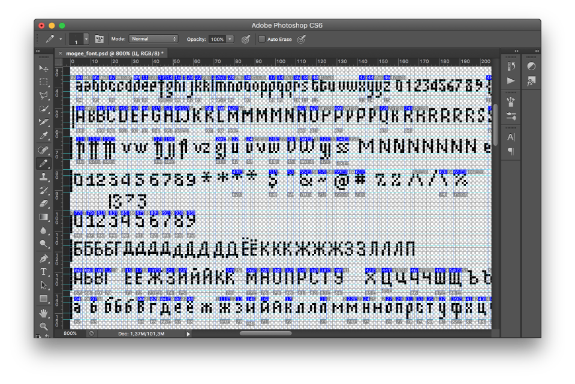

Turning back, it’s hard for me to imagine that I could face the task of developing a pixel-art font for a game without using font editors and game-engines that support fonts. It all started with the fact that me and Andrey took part in #LOWREZJAM game jam. The rules were to make a game with a resolution of 64x64 pixels. This spontaneous task was the starting point for creating an almost full-fledged bitmap font with kerning and ligatures support.
The story goes back to 2016, when the first version of the game was completed within three days.
The first png sprite, which included the entire graphics of the game, looked quite simple. The typography that we used in the game was extremely basic. Only “press to play” and numbers for the score.
The idea of developing a full-fledged font appeared later, when Andrey hold a talk at elm-conf and we decided to put slides inside the game. This defined the primary use case of the font: it had to be a part of the game, and had to fit the screen of a fairly low resolution.
Since the game takes place in the underworld, I’ve decided to make descenders disproportionately extended to ascenders to get the impression of a cave with stalactites. It was a naive idea, but I still like it. :) When every pixel plays a huge role, it was obvious to use a condensed font. Therefore, most of the lowercases had just 3 pixels width.
The font was developed in Photoshop, where, using slices, I separated all the characters and saved each one as a png. Every glyph is named by its unicode and ligatures with several unicodes separated by underscore. As a result, I got a folder full of png files.
Next, Andrey collected all glyphs in a PNG sprite, from which it was possible to obtain information on the width, height and coordinates. What do we need this for? The font rendering system, that Andrey has written, uses WebGl to rasterise each glyph on a screen, that’s why one of the options was to upload every glyph as a separated image.
Using condensed font was a right decision, but still, there was a room for improvement. To reduce a space between characters we needed to create a system of ligatures and assign spacing and kerning. Ligature is a combination of two or more characters into a single glyph. Spacing and kerning are the processes of adjusting the distance between glyphs.
First of all spacing was assigned. By default left side bearing is equal to 0 and right side bearing is equal to 1 pixel.
After that I defined kerning classes. Due to the fact that we didn’t have graphical user interface for this purpose, I’ve designated kerning classes and assigned kerning for the classes and pairs of glyphs directly inside the code.
The result looks like this. Later I added Cyrillic as well. It is still work in progress.
To try Mogeefont begin to type text in the left text field.
Now the font is distributed as an elm package.
Mogeefont as well as the game itself are open source projects. You are welcome to contribute to both of them.